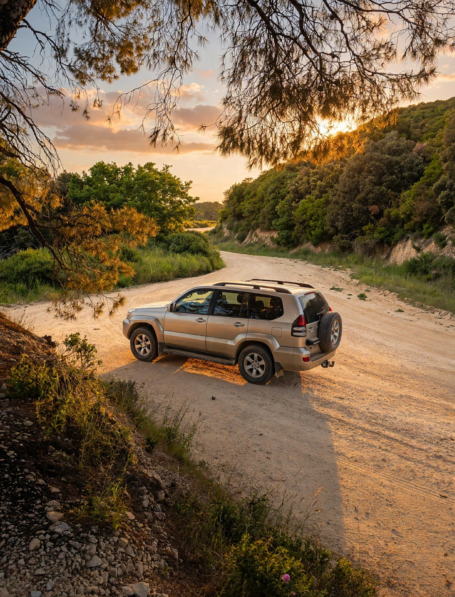
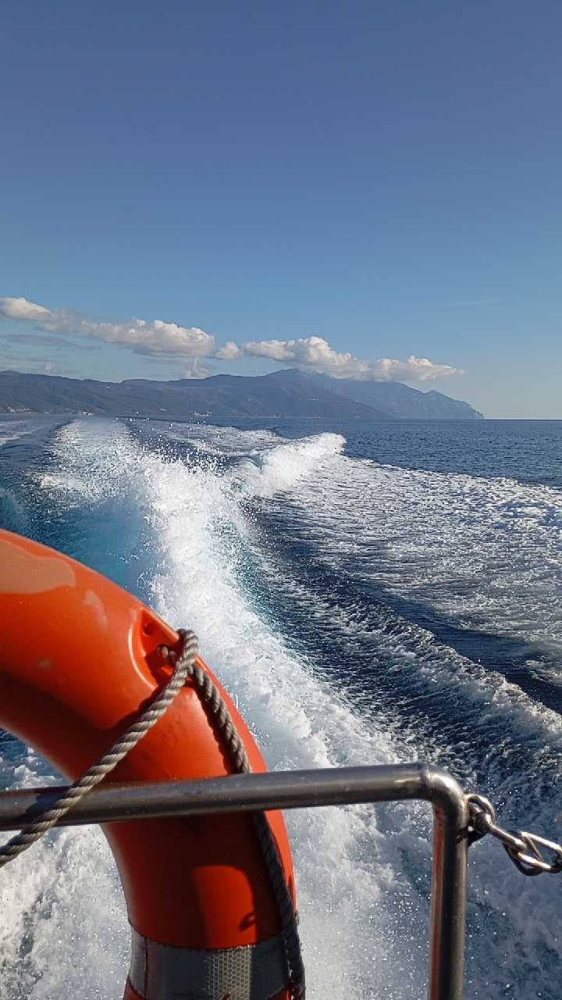
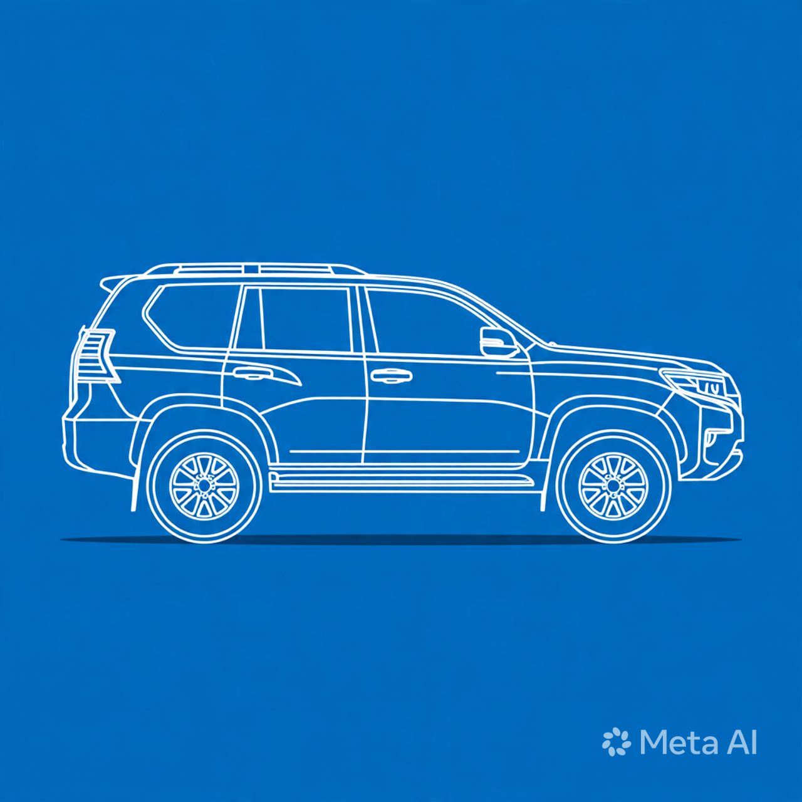

Помогу с визой на Афон (диамонитирион), документами для шенгенской визы, и проведу по святыням. Ваш персональный гид по Святой Горе Афон — Андреас Борисов.
Нажмите на маркер монастыря для просмотра информации

На фото — джип на грунтовой дороге Афона. Полный привод, 7 мест, кондиционер. Проезжает к келиям в лесных чащах, куда не ходят афонские маршрутки. До 18 монастырей доступных по суше.
Поездки на Афон — это паломничество в единственную в мире монашескую республику. Я, Андреас Борисов, гражданин Греции, с 1995 года организую поездки на Афон для мужчин из России, Украины, Беларуси, Сербии и Европы. В отличие от больших турфирм, я сопровождаю вас лично 24/7.
Однодневная поездка на Афон — скоростной катер, 2-3 монастыря, подходит для первого раза. Поездка на 3 дня — классический маршрут с ночевками в монастырях. Поездка на 7 дней "Афонская Седмица" — полный ретрит с участием в ночных службах. Цена поездки на Афон зависит от формата: от 300 евро (1 день) до 1200 евро (7 дней) с полным сопровождением, без учета диамонитириона и билетов.
Почему поездки на Афон со мной: 29+ лет опыта, личный гид 24/7, внедорожник Prado для дальних скитов, где не ходят группы. Все отзывы и документы — в моем профиле на NeedGuide — Андреас Борисов. Связь: WhatsApp / Telegram / Viber +30 694 447 6923
Без отказов. Полное оформление документов для паломничества на Афон.

29+
лет опыта
Гражданин Греции. В сфере греческого туризма работаю с 1995 года, специализируюсь на паломнических турах на Святую Гору Афон.
Помогаю паломникам со всего мира посетить Афон: от оформления диамонитириона и шенгенской визы до проведения индивидуальных джип-туров и онлайн-сопровождения.
Языки
Русский, Греческий
Лицензия
Официальный гид
Моя цель — чтобы ваше паломничество на Афон прошло спокойно, без бюрократии и с глубоким духовным содержанием. Наши программы это не торопливый Ретрит с участием в Службах во многих Монастырях, с Исповедью у Знаменитых Духовников Афона, и Причастием. Посетим Старцев, достойных приемников Святого Паисия Святогорца, зададим Им вопросы и оставим молимтвенные Требы.
Индивидуальный подход к каждому паломнику. Полное сопровождение от визы до возвращения домой.
Почему клирики и паломники получают отказ и как я делаю 0 отказов. Помощь в оформлении шенгена.
Ограничения по паспортам кроме РФ и Украины. Помогу получить разрешение на въезд на Святую Гору. Заявка за 4-6 месяцев.

Комфортные поездки на внедорожнике Toyota Land Cruiser Prado по территории Святой Горы с духовным рассказом.
Однодневная и двухдневная программа поездки на Афон с ночлегом в монастыре. Смотрите видео маршрута.
▶️ YouTube @athos-guideС моим сопровождением посетите Метеоры, остров Корфу, Пещеру Апокалипсиса на Патмосе, Суроти, Эгину. Организую маршрут и ночлег на моем джипе.
Не хотите ездить на джипе, хотите пройтись по тропам Афона? Проведу для вас онлайн-экскурсию по Афону через любой удобный мессенджер. Вовремя подам необходимый транспорт, предоставлю описание мест, забронирую заранее ночлеги, билеты на плавсредства, коммерческую лодку, предоставлю трекеры для восхождения на Вершину Афона.
Важно: Для посещения Афона мужчинам требуется специальное разрешение (диамонитирион).
Ваша заявка принята. Мы сейчас откроем WhatsApp, просто нажмите "Отправить" там.
Святая Гора Афон — единственная в мире православная монашеская республика, расположенная на полуострове Халкидики в Греции. Это автономное государство под духовной юрисдикцией Константинопольского Патриархата, где уже более 1000 лет непрерывно возносится молитва. Доступ на Афон строго ограничен и регламентируется особыми правилами, действующими с 1046 года.
Главный документ для паломника — диамонитирион. Это особая виза, которую выдает Бюро паломников в Урануполи или Салониках. Без диамонитириона въезд на территорию Святой Горы невозможен. В 2026 году действует квота: только 110 паломников в день, из них 100 православных и 10 иноязычных. Для граждан России, Украины, Беларуси и Сербии оформление идёт через паломническую службу. Срок действия — 4 дня с правом ночлега в монастырях. Стоимость для православных — 25 евро, для остальных — 30 евро.
Кроме диамонитириона, гражданам стран вне ЕС требуется шенгенская виза категории C в Грецию. Для паломников консульство Греции лояльно и редко даёт отказы при наличии приглашения от монастыря или подтверждения от официального гида. Необходимые документы: загранпаспорт, анкета, фото, страховка на 30 000 евро, бронь отеля в Урануполи на 1 ночь, выписка со счёта. Срок оформления — 10-15 рабочих дней. Я помогаю собрать полный пакет документов и гарантирую подачу без ошибок.
Аватон — тысячелетний запрет на посещение Афона женщинами и самками животных. Правило введено в 1046 году императором Константином Мономахом. По преданию, сама Богородица попросила эту землю в свой удел и запретила другим женщинам ступать на неё. Исключение делается только для кошек — они ловят мышей в монастырях. Нарушение аватона карается уголовным сроком до 1 года по законам Греции. Для женщин организуются круизы вокруг полуострова на расстоянии 500 метров от берега.
На Святой Горе 20 суверенных монастырей. Каждый имеет свою историю и святыни. Великая Лавра — первый и главный монастырь, основан в 963 году. Ватопед хранит Пояс Пресвятой Богородицы и 7 чудотворных икон. Иверский монастырь — дом Иверской иконы Вратарницы. Хиландар — сербская обитель с виноградной лозой Святого Симеона. Пантелеимонов монастырь — русский, здесь глава Великомученика Пантелеимона. Другие: Дионисиат, Кутлумуш, Пантократор, Ксиропотам, Зограф, Дохиар, Каракал, Филофей, Симонопетра, Святого Павла, Ставроникита, Ксенофонт, Григориат, Эсфигмен, Святого Павла, Констамонит.
Классический маршрут на 3 дня: День 1 — паром Урануполи → Дафни, заселение в Пантелеимонов монастырь, вечерня. День 2 — джип-тур Дафни → Карьес → Иверский → Ватопед → ночлег. День 3 — Великая Лавра → пещера Святого Афанасия → паром обратно. Пешие тропы между монастырями занимают 2-6 часов. Для восхождения на вершину Афона 2033 м требуется физическая подготовка и 2 дня. На внедорожнике Toyota Land Cruiser Prado мы объезжаем 5-6 монастырей за день с остановками у святынь, скитов и келий старцев. Все разрешения, топливо и ночлеги включены.
Лучшее время — май-июнь и сентябрь-октябрь. Температура +20...+25°C, нет жары и толп. Июль-август — до +35°C, сложно ходить пешком. Зимой с ноября по март частые шторма, паромы отменяют. На Пасху и Успение Богородицы 15 августа — пик паломничества, диамонитирион надо бронировать за 6 месяцев. Я оформляю разрешения на любые даты и держу бронь даже в высокий сезон.
Важно: На Афоне нет отелей, банков и магазинов. Одежда только закрытая: брюки, рубашка с длинным рукавом. Фото и видеосъемка в монастырях запрещены. Мобильная связь ловит только в Карьесе и Дафни. Для связи со мной используйте WhatsApp +30 694 447 6923 — я на связи 24/7 и решаю любые вопросы на месте.
Для православных паломников - 25 евро, для остальных - 30 евро. Действует 4 дня. Я оформляю без очередей, даже в высокий сезон в августе и на Пасху.
Да, если у вас паспорт РФ, Украины, Беларуси. Нужна виза категории C в Грецию. Помогаю собрать документы без отказов - приглашение от монастыря, страховка, бронь. Подробнее тут про шенген.
Это поездка на Toyota Land Cruiser Prado по Святой Горе. За день посещаем 5-6 монастырей: Великая Лавра, Ватопед, Иверский и келии старцев куда не ходят маршрутки. От 620€ за машину (1-5 человек). Подробнее про джип-тур.
Действует Аватон - запрет с 1046 года. По преданию сама Богородица взяла Афон в свой удел. Женщины могут совершить круиз вокруг Афона на корабле в 500м от берега.
От 1 дня (скоростной катер) до 7 дней "Афонская Седмица" с ретритом и ночными службами. Классика - 3 дня с ночевкой в монастырях. Все программы тут.
После Афона паломники едут в Салоники, к мощам Димитрия Солунского, в Метеоры или остаются в Урануполи. Я помогаю с отелями и трансферами. Идеи после Афона.
В греческом туризме с 1995, на Афоне с 1996. Гражданин Греции. 3 реальных отзыва с проверкой.
Андреас — это настоящий профессионал, который превратил наше путешествие в незабываемое приключение! Его энергия, обаяние и глубокие знания создали потрясающую атмосферу. Он не просто гид — он настоящий проводник в мир ярких эмоций.
Оригинал отзыва →Поездки по Афону на джипах с Андреасом Борисовым оставили самые яркие впечатления. За один день удаётся побывать в большом количестве монастырей и скитов, которые обычному паломнику порой недоступны. Андреас отлично ориентируется в афонских дорогах, знает редкие маршруты. Особая ценность — его рассказы.
Оригинал отзыва →Обращались к Андреасу и в его сопровождении ездили по Святым местам в Греции и на Афон. Выражаем большую благодарность за интересные и полезные для души поездки. Будем обращаться снова.
Оригинал отзыва →Под покровом Пресвятой Богородицы
✦